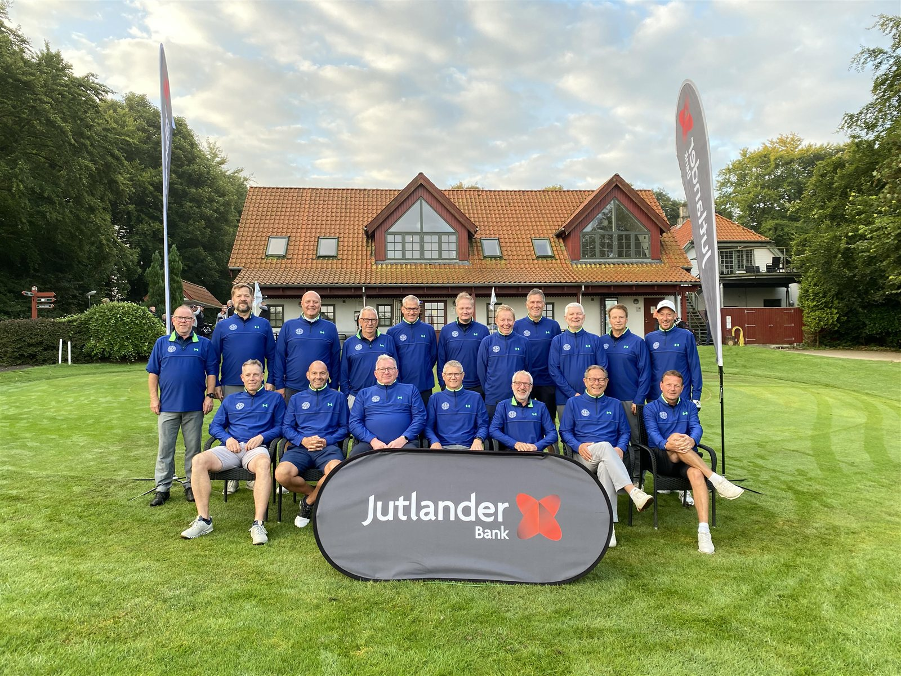
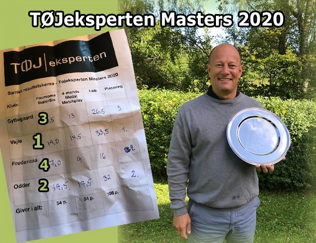
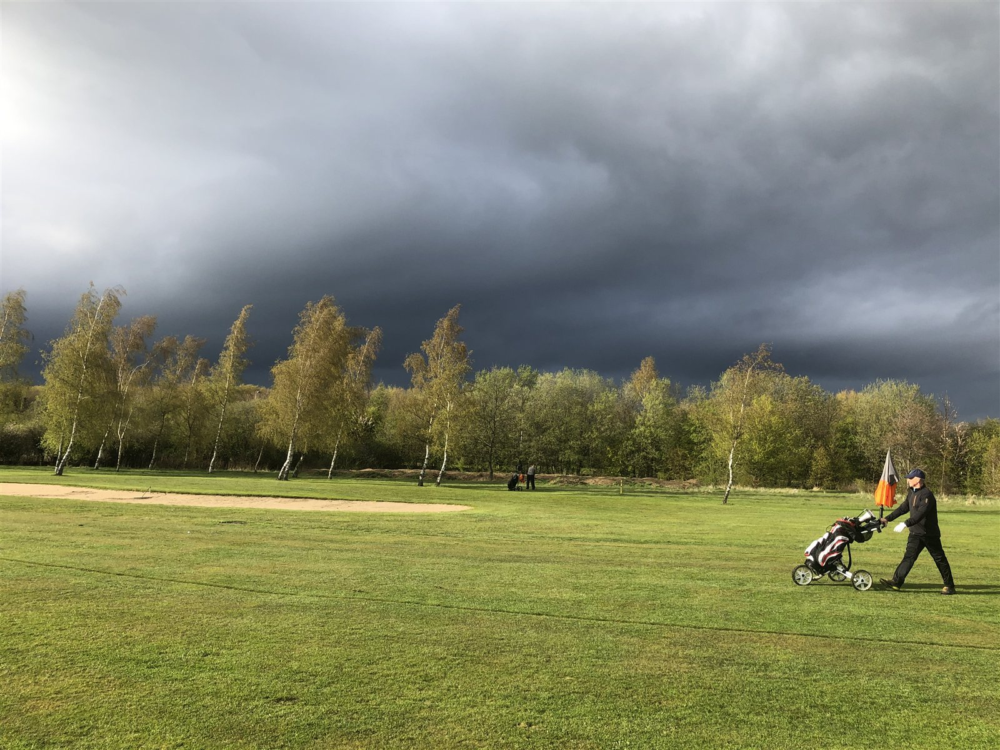

Østjysk Mesterskab - 2026

For nuværende håber vi at det for 2026 igen kan lykkes at finde en matchsponsor eller to for vores årlige dyst mod Odder, Fredericia & ???. De fire klubber arbejder alle på sagen.
Vores torsdagsmatcher, ture osv. er alle tællende runder til indsamling af point som i sidste ende giver adgang til ”ØSTJYSK MESTERSKAB - 2026”.

Siden 1996 har klubberne dystet om at blive regionens mester. Vi kæmper således mod herreklubberne i Fredericia, Gyttegård og Odder. I tidens løb har kært barn haft mange navne: Eiland Teledata Cup, KM Telekom Cup, Home Cup, Damstahl Cup, Stark Cup, Royal Unibrew Cup, MidSpar Cup, Spar Nord Cup, Tøjeksperten Masters og senest Jutlander Bank Masters. Sidste gang vi spillede i Vejle hed det Dialog Data Cup (Dialog Data, som nu hedder Vis Performance).
Dagen afsluttes med en hyggelig og festlig middag i klubben.

I 2026, skal vi lørdag den 19. september på udebanen i Fredericia, forsvare de sidste 8 års sejre!!! mod Fredericia, Gyttegård og Odder.
Det bliver for vildt hvis (når) vi tager den ottende af slagsen i træk…
Kvalifikationskriterier til Østjysk Mesterskab - 2026 som spilles den 19. september 2026 i Fredericia
De 10 bedste matcher - spillet på bane "til sommergreens" i perioden 26. august 2025 til 30. august 2026 - for hver enkelt spiller er tællende. Pointene for de 10 bedste matcher lægges sammen.
Der udtages i alt 18 spillere til holdet som skal spille Østjysk Mesterskab. De 10 spillere med de højeste pointtal kvalificeres. Ved pointlighed afgøres de 10 bedste efter laveste handicap. Vinderen af henholdsvis A og B rækken i single hulspilsturneringen kvalificeres. De sidste 6 spillere er Captains pick.
Den 30/08 2026 er sidste tællende spilledag for kvalifikation. Det er en betingelse for at deltage, at man er med i hele arrangementet, også den efterfølgende festmiddag og præmieoverrækkelse.
Point gives efter nedenstående skala som er gældende for kvalifikationens matcher i perioden 26. august 2025 til 30. august 2026:
Overall: 8 points
Derudover gives der point i både A og B rækken efter placering, for dagens match form.
| Placering | Points |
|---|---|
| 1 | 6 |
| 2-4 | 5 |
| 5-7 | 4 |
| 8-10 | 3 |
| 11-12 | 2 |
| >= median | 1 |
- Da det er placeringen i dagens match form, der afgør, hvor mange point man optjener, vil alle matcher uanset årstid og vejrforhold tælle lige. Derved stilles alle lige i kvalifikationen.
- Statistisk set giver det lige mange point til A og B spillere.
- Mindst halvdelen af spillerne på en given dag får point, da der gives 1 point til placeringerne 13 og ned til halvdelen af alle deltagere, i hver gruppe. Deltager 32 spillere i én gruppe, får de 16 første point efter ovenstående fordeling.
- Tildeling af wildcards administreres af Captain.
Tidligere resultater i turneringen
| År | Sted | Vinder |
|---|---|---|
| 2026 | Fredericia | Fredericia |
| 2025 | Gyttegård | Vejle |
| 2024 | Odder | Vejle |
| 2023 | Vejle | Vejle |
| 2022 | Fredericia | Vejle |
| 2021 | Gyttegård | Vejle |
| 2020 | Odder | Vejle |
| 2019 | Vejle | Vejle |
| 2018 | Fredericia | Vejle |
| 2017 | Horsens | Horsens |
| 2016 | Odder | Odder |
| 2015 | Vejle | Vejle |
| 2014 | Horsens | Horsens |
| 2013 | Fredericia | Fredericia |
| 2012 | Odder | Odder |
| 2011 | Vejle | Vejle |
| 2010 | Horsens | Horsens |
| 2009 | Fredericia | Vejle |
| 2008 | Odder | Vejle |
| 2007 | Vejle | Vejle |
| 2006 | Horsens | Horsens |
| 2005 | Odder | Odder |
| 2004 | Fredericia | Fredericia |
| 2003 | Vejle | Vejle |
| 2002 | Juelsminde | Vejle |
| 2001 | Horsens | Horsens |
| 2000 | Odder | Fredericia |
| 1999 | Fredericia | Fredericia |
| 1998 | Vejle | Fredericia |
| 1997 | Juelsminde | Horsens |
| 1996 | Horsens | Vejle |